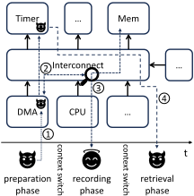
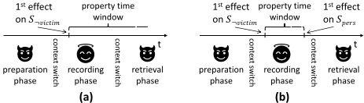

MCU 全局时序侧信道及其检测
论文指出，即使没有 cache、分支历史表等足迹缓冲、也不存在 attacker/victim 并发执行的 MCU SoC，仍可经由外设 IP 与片上互连（DMA、加速器、总线仲裁）构造时序侧信道。作者提出 UPEC-SSC 方法：在 UPEC/IPC 框架下用 2-safety 属性比较两份 RTL 实例，利用'victim 只能经 CPU 与系统接口被窥探'与'机密信息必须跨上下文切换持久化'两条观察，把属性窗口压缩到 2 个时钟周期，再通过迭代删除受影响的非持久状态变量直至不动点，以归纳获得无界有效的安全证明。在超过 5M 状态变量的 RISC-V Pulpissimo SoC 上，方法发现了一个无需定时器、利用 HWPE 加速器与内存争用的新 BUSted 攻击变体，检测证明迭代低于 1 分钟；实施保守修复（private memory 加访问限制）后，经 3 次迭代（58 秒至 2 小时 52 分钟）证明系统在该威胁模型下安全。
传统时序侧信道研究集中于带 cache 或攻击者/受害者可并发执行的系统，MCU 类单核、无缓冲 SoC 长期被忽视；但 BUSted 等攻击表明外设 IP 与片上互连可被用于窥探 victim。论文要解决：如何对 MCU-style SoC 进行可扩展的、穷尽式的 SoC 级时序侧信道漏洞形式检测，并在发现漏洞后给出可被形式证明有效的对策。
提出 UPEC-SSC（UPEC for System Side Channels）：基于 Interval Property Checking（IPC）在 RTL 上构造 2-safety 计算模型，即实例化两份设计、除机密数据外所有状态变量等价。定义状态变量集合 S_all、S_¬victim（除 CPU 核与 victim 内存空间外的全部状态）与 S_pers（可跨上下文切换持久保存信息的状态）；由观察 1（窥探只能发生在 victim 访问 CPU 外部组件时）与观察 2（机密信息必须持久化才能被取回）将属性窗口缩至 2 个时钟周期；迭代检查 UPEC-SSC(S) 属性，把非持久的新受影响状态变量从 S 中删除，直至属性成立形成归纳步，从而以有界属性获得无界有效的证明；另提供按周期展开（参数 k）的属性以生成更长的显式 counterexample。victim 内存地址范围采用符号化建模，使证明独立于具体 victim 软件。实验使用 Siemens EDA 的商用 property checker OneSpin 360 DV。
在 RISC-V Pulpissimo SoC（超过 5M 状态变量）上检测到此前未知的 BUSted 攻击变体：利用 HWPE 加速器对 primed 内存区域的持续写覆盖与 victim 内存访问在互连上的争用，推断 victim 的内存访问次数，且无需使用任何定时器
检测该漏洞的 unrolled 证明（展开 2 个时钟周期）迭代运行时间低于 1 分钟
实施保守对策（将安全关键内存映射到仅少数 IP 可访问的 private memory 并限制 IP 合法配置）后，Alg. 1 经 3 次迭代证明系统安全，迭代运行时间介于 58 秒与 2 小时 52 分钟之间
该修复被证明可同时消除所有其他 counterexample
实验环境：Intel i9-13900k、128 GB RAM、Linux，商用 property checker OneSpin 360 DV（Siemens EDA）
已有工作要么只演示攻击（BUSted、DMA 争用攻击、Nemesis），要么形式方法不针对也不扩展到 SoC 级时序侧信道：单点 security property checking 不提供 SoC 级保证，IFT 难以穷尽且求解器复杂度不可行，[8][7] 分别针对 functional confidentiality 与 integrity 而非时序侧信道。本文是首个面向 MCU-style SoC 的穷尽式时序侧信道形式检测方法，核心创新在于两条观察加状态集合分类，把原本需数百上千时钟周期的攻击序列验证压缩为 2 拍属性加归纳不动点，使 5M+ 状态变量 SoC 的验证可行；并首次揭示无需定时器的 MCU 时序侧信道变体，说明'限制定时器访问/对定时器加噪声'这类流行对策并不充分。
相关度级别：medium
命中能力域：2.5 形式验证与等效性检查
理由：论文技术核心是基于 IPC 的 RTL 形式 property checking 与 2-safety 安全属性验证，属于 2.5 域方法范畴；其漏洞机理（互连仲裁争用、跨上下文持久化的 IP 状态）与团队设计的 memory controller、互连、DMA 类 IP 直接相关——若这些 IP 被集成到带安全隔离需求的 SoC，仲裁时序与缓冲持久性可能成为侧信道载体。但论文的验证对象是包含 CPU、DMA、外设的完整 MCU SoC，需要 attacker/victim 任务威胁模型与全 SoC 状态变量分析，与团队以 IP 为交付粒度、以 CDC/RDC 形式化与协议合规形式化为主的日常工程场景不完全重合，因此定为 medium：方法学（符号化地址建模、状态集合分类、归纳不动点、false counterexample 处理）可借鉴，但需裁剪后才能用于 IP 级验证。
建议动作：作为方法参考存档
Johannes Müller 1、Anna Lena Duque Antón 1、Lucas Deutschmann 1、Dino Mehmedagić 1、Cristiano Rodrigues 2、Daniel Oliveira 2、Keerthikumara Devarajegowda 3、Mohammad Rahmani Fadiheh 4、Sandro Pinto 2、Dominik Stoffel 1 和 Wolfgang Kunz 1
1 凯泽斯劳滕-兰道大学（RPTU Kaiserslautern-Landau），2 米尼奥大学（Universidade do Minho），3 Siemens EDA，4 斯坦福大学（Stanford University）
微架构时序侧信道作为一种安全威胁，已在具有共享缓冲区（如缓存）和/或攻击者与受害者任务执行并行性的硬件设计中得到深入研究。然而，与普遍直觉相反，近期的研究活动表明，即使在不具备此类特性的微控制器 SoC 中，这种威胁也是真实存在的。本文描述了此前被安全分析所忽视的 SoC 级时序侧信道，并提出了一种新的形式化方法来弥补这一空白。在针对 RISC-V Pulpissimo SoC 的案例研究中，我们的方法检测到了一个此前未知攻击变体所利用的漏洞，该攻击变体使攻击者能够获取受害者存储器访问行为的相关信息。在实施一项保守的修复之后，我们验证了该 SoC 就所考虑的时序侧信道类别而言现在是安全的。
时序侧信道、形式化验证、硬件安全
三十年来，微体系结构时序侧信道一直是学术界和工业界关注的课题。时序侧信道攻击通过测量处理数据所需的时间，或通过检查机密数据在系统中留下的痕迹，来提取机密数据。尽管此类攻击已被证明可以利用各种各样的微体系结构特性，但它们大多针对允许攻击者与受害者执行并行的系统，或者针对配备了能够保存机密数据痕迹的缓冲区（例如缓存）的系统。
相比之下，微控制器（MCU）由相对简单的处理器核构成，通常既不提供攻击者并发性，也没有可保存痕迹的缓冲区。这或许可以解释为什么它们在时序侧信道文献中受到忽视。
然而，最近有研究表明，即使是简单的 MCU 也可能容易受到时序侧信道攻击 [1, 11, 15]。已报道的攻击利用中断 [15] 和存储器总线仲裁 [1, 11] 来绕过安全基础设施并窃取机密
本工作部分受到德国联邦教育与研究部（Bundesministerium für Bildung und Forschung）Scale4Edge 项目（资助编号 16ME0122K-16ME0140+16ME0465）、Intel Corp. 的 Scalable Assurance Program 以及 Siemens EDA 的资助。
允许免费制作本作品全部或部分的数字或硬拷贝副本以供个人或课堂使用，前提是副本的制作与分发不用于牟利或获取商业优势，且副本在首页带有本声明及完整的引用信息。本作品中归作者以外的他人所有的组件，其版权必须得到尊重。允许在注明出处的情况下进行摘录。若以其他方式复制、再版、发布到服务器或重新分发到列表，则需要事先获得特定许可和/或支付费用。如需申请许可，请联系 permissions@acm.org。
© 2024 版权归所有者/作者所有。出版权授权予 Association for Computing Machinery（美国计算机协会）。
数据。其中，BUSted 攻击 [11] 展示了一类新型的时序侧信道，这类侧信道利用了 MCU 所附带的大量复杂 IP 和片上通信结构（总线、互连）：在处理器核上执行的攻击者任务访问外设 IP，并指示它们主动窥探受害者未来对机密程序的执行。攻击者并非分析受害者无意间留下的痕迹，而是让这些窥探 IP 收集有关受害者存储器访问的机密信息，并将其保存在它们自身的状态中。
在实践中，易受攻击的微控制器（MCU）所带来的威胁尤为值得关注，因为此类系统几乎存在于每一个工业应用领域。显然，人们需要更深入地理解片上系统（SoC）级的时序侧信道，并需要一种系统化的方法来检测它们。必须开发新的形式化方法，使其能够在MCU中提供形式化的安全保证。一旦检测到侧信道，就需要有效的对策来可靠地消除该漏洞。本文正是针对这些需求：
本文聚焦于MCU SoC中的时序侧信道。在本节中，我们将描述威胁模型（第2.1节），并说明如何利用SoC中的时序侧信道（第2.2节）。
我们假设系统包含一个单线程单核处理器（本文中简称为CPU），以及若干外设IP和片上通信结构，这在微控制器（MCU）中十分常见。该系统通过时间复用来支持多任务处理，即各个任务并非同时执行，而是通过上下文切换相互分隔。本文所考虑的安全威胁 DAC '24, June 23-27, 2024, San Francisco, CA, USA

由在CPU上执行的攻击者任务和受害者任务构成，攻击者试图获取有关受害者执行的机密信息。我们的威胁模型针对的是片上系统（SoC）范围的微架构侧信道。因此，我们可以假设攻击者无法直接访问分配给受害者任务的内存区域，且受害者不会将机密数据存储在攻击者可访问的内存区域或IP寄存器中。由于本工作的重点是不含缓存或专用微架构缓冲区（例如分支历史表）的MCU风格SoC，我们可以在威胁模型中进一步假设机密信息不会在CPU中留下痕迹。
针对MCU SoC的时序侧信道攻击通常由许多步骤组成 [11]。就本工作而言，我们聚焦于此类攻击的关键部分，即描述攻击者如何获取机密信息。我们建议最感兴趣的读者参阅相关工作 [11]，以完整理解攻击方法学。在本工作中，我们将MCU中时序侧信道的利用划分为3个阶段，各阶段之间由上下文切换分隔：
作为一个简单的例子，考虑一个MCU SoC，除其他IP外，它还包含一个简单的CPU、存储器、一个直接存储器访问（DMA）模块和一个定时器，如图1所示。在准备阶段，攻击者指示DMA执行一些存储器访问，随后启动定时器 1 ○ 。在上下文切换到受害者任务之后，攻击的记录阶段开始。按照攻击者的指示，DMA执行存储器访问，然后启动定时器 2 ○ 。如果受害者任务试图与DMA并发地访问存储器，就会产生争用 3 ○ 。其结果是，定时器的启动被延迟。在攻击的提取阶段，攻击者任务读取定时器状态或等待定时器溢出事件 4 ○ 。基于定时器状态，攻击者可以推断出有关受害者任务存储器访问的信息。正如先前的攻击所演示的那样 [11]，这些信息随后可用于破坏安全基础设施所提供的隔离。
由此，我们减少了属性所需覆盖的时钟周期数，同时仍能捕获任何针对安全关键受害者行为的窥探。然而，在属性中描述提取阶段（即从窥探 IP 中检索信息）可能需要该属性额外跨越数百个时钟周期，尤其是因为该阶段包含从受害者到攻击者的上下文切换。第二个观察结果帮助我们应对这一问题：

观察 2. 机密信息要能被攻击者任务检索到，它必须跨越上下文切换持续存在于系统中的状态变量里。
定义 2. 我们将 S pers ⊂ S ¬ victim 定义为状态变量的集合
任何攻击者的利用行为都要求机密信息在记录阶段结束时最终进入 S pers。基于这一观察，属性的时间窗口可以进一步缩小，因为我们只需证明受害者执行不会影响设计中的任何持久状态变量 S pers。如图 2 (b) 所示，这为我们提供了属性时间窗口的一个确定终点。我们将在第 3.4 节中详细介绍如何获取 S pers，以及如何通过归纳法证明该终点的有效性。
在本节的其余部分，我们首先概述 UPEC 计算模型（第 3.2 节），然后将上述观察结果具体化，以形式化并证明有界 UPEC 属性，这些属性仅跨越少量时钟周期，同时实现全局的、无界的证明有效性（第 3.3、3.4 和 3.5 节）。
UPEC 最初是作为一种针对 CPU 中瞬态执行攻击（transient execution attacks）的穷举式检测方法而提出的。然而，近期的研究已经证明了它的适应性以及它在其他安全验证问题上的成功应用 [2, 7, 8]。UPEC 基于在寄存器传输级（RTL）上进行的区间属性检查（Interval Property Checking, IPC）[14]。在 IPC 中，属性利用 RTL 设计的状态变量和信号，在有限数量的时钟周期上进行表述。在检查某个属性时，IPC 求解器会采用一个符号化的起始状态，该状态对设计输入的所有可能历史进行建模。这与有界模型检查不同，后者使用的是具体的起始状态。
UPEC 证明的目标是保证攻击者任务无法提取位于存储器中的机密数据。这是通过一种特殊的 2-安全性（2-safety）计算模型来实现的：RTL 设计被实例化两次，并且除机密数据之外，设计的所有状态变量被假定在两个实例之间相等。UPEC 属性假定一个攻击者任务在处理器核上执行，并证明该任务执行的唯一性，即执行独立于机密数据。这一点是通过验证两个实例之间的任何差异（该差异必然源自机密数据）都无法传播到攻击者任务并影响其执行来检查的。
assume: during t .. t +1: Victim_Task_Executing() ; during t .. t +1: Primary_Input_Constraints() ; at t : State_Equivalence( S ) ; prove: at t +1: State_Equivalence( S ) ;
如上所述，我们利用观察结果 1 和 2，构造了一个仅跨越两个时钟周期的 UPEC 属性，如图 3 所示。该属性断言宏 Primary_Input_Constraints()，该宏约束两个实例的主输入彼此相等。通过宏 Victim_Task_Executing()，该属性假设所有代表分配给受害任务的存储器区域或设备寄存器的地址范围，都不能被片上系统（SoC）中可能实施窥探的 IP 核直接访问。这将属性限定在我们的威胁模型之内。此外，该宏约束受害任务对受保护地址的访问在两个系统实例之间互不相同，而对所有其他地址的访问则相同。因此，只有受保护的访问被建模为机密信息。该属性对作为受害任务实际执行的程序不作任何限制；任何可能的软件均由 IPC 求解器加以考虑。另外，分配给受害任务的地址范围采用符号化建模，以表示任何可能的分配方式。宏 State_Equivalence( S ) 以状态变量集合 S 作为参数。它要求 S 中的所有状态变量与另一个 SoC 实例中的对应变量相等。我们用 S 来建模系统中未受受害行为影响的部分，该部分因此在时钟周期 t 时不可能持有机密信息。该属性证明，在时钟周期 t + 1 时，系统中未受影响的部分同样不受受害方机密信息的影响。
该属性是所提出的面向系统侧信道的 UPEC（UPEC for System Side Channels，UPEC-SSC）方法的核心。验证流程在算法 1（Alg. 1）中给出概述。该流程首先将 S 初始化为 S ¬ victim，即在受害任务访问处理器核之外的任何组件之前，不受受害任务执行影响的系统状态。随后，使用 IPC 求解器针对状态集合 S 检查 UPEC-SSC 属性，并产生一个反例。该反例表明属性被违反，即存在一组状态变量 S cex，它们与另一设计实例中的对应变量不同。对于 S cex，我们区分三种情况：第一种情况，属性成立且 S cex = ∅。这意味着受害任务无法影响更多的状态变量，设计是安全的，流程随之终止。第二种情况，属性不成立，且 S cex 包含来自 S pers 的元素，即关于受害任务执行的数据可以传播到某个持久性 IP，攻击任务随后可从该处获取这些数据。这种情况即构成一个可被攻击利用的漏洞。第三种情况，属性不成立，但 S cex 不包含来自 S pers 的元素。在这种情况下，受害任务的执行影响了新的状态变量，但这些变量无法在向攻击任务进行上下文切换的过程中保存秘密数据。因此，在下一次属性检查时，S cex 中的状态变量将从未受影响的状态集合 S 中移除。在 while 循环的每一次迭代中，来自受害任务的秘密信息可能传播到的状态变量集合 S 都会被缩减。这一过程不断重复，直至最终证明设计要么是安全的，要么存在漏洞。
对于安全的设计，算法 1 中的流程会计算出一组状态变量 S，使得属性 UPEC-SSC( S ) 成为归纳性的。在最终导致 return secure（第 6 行）的那次迭代中，S 已达到一个不动点，此时属性 UPEC-SSC( S )（在第 4 行调用）成为归纳步骤。对于最终集合 S，它证明了：如果受害任务在时刻 t 尚未影响 S 中的任何状态变量，那么在未来任何时刻它也不会影响。归纳基础平凡地由以下事实给出：初始时，即在受害任务于 CPU/系统接口上变为活跃之前，根本没有任何状态变量受到影响。对于最终集合 S，有 S pers ⊂ S ⊂ S ¬ victim 成立。由此证明，受害任务没有引起任何在上下文切换之后可能对攻击者可见的系统状态变化。
1: 过程 UPEC-SSC 2: S ← S ¬ victim 3: 当 true 时执行 4: S cex ← check(UPEC-SSC( S )) 5: 如果 S cex = ∅ 则 6: 返回 安全 7: 否则如果 S cex ∩ S pers ∅ 则 8: 返回 ( 存在漏洞 , S cex ) 9: 否则如果 S cex ∩ S pers = ∅ 则 10: S ← S \ S cex
注意，即使该过程返回 hold，仍需要额外的归纳证明才能证明系统是安全的。这是因为，即使受害任务的影响在从时钟周期 k - 1 到 k 的过程中未能传播到新的状态变量，在未来的某个时钟周期 k + n 中传播仍可能继续进行。执行归纳证明时，可以使用原始算法（Alg. 1），并将 S ← S[k] 取自最后一个展开的时钟周期 k。
我们对 Pulpissimo [12] 开展了案例研究，该芯片是一款微控制器（MCU）风格的片上系统（SoC），具有两级流水线的 RISC-V 核心、一个 DMA、一个加速器以及众多外设 IP，其中包括 I/O 接口。整个 SoC 包含超过 500 万个状态变量。将 UPECSCC 应用于 Pulpissimo 后得到了若干反例，这些反例指出了该 MCU 中潜在的漏洞。我们的分析与调试过程从挑选一个特别值得关注的反例开始，因为它指向了 BUSted 攻击的一种迄今未知的变体。在下文中，我们将在第 4.1 节中深入介绍这种新的攻击变体以及相应漏洞的检测。在第 4.2 节中，我们将详细阐述如何缓解此类漏洞，以及如何使用 UPEC-SSC 方法针对安全目标证明修改后的系统是安全的。
我们的所有实验均在一台工作站 PC 上进行，该 PC 配备 Intel i9-13900k 处理器和 128 GB 内存，运行 Linux 操作系统以及 Siemens EDA 的商用属性检查器 OneSpin 360 DV。
UPEC-SCC 生成了一个反例，揭示了一个涉及系统中硬件性能引擎（HWPE）加速器 IP 与存储器器件的安全漏洞。HWPE 可被配置为直接从存储器获取其输入，对数据执行复杂的算术运算，并将结果写回所配置的存储器区域。
检测到的反例展示了一种场景：攻击者将 HWPE 设置为窥探工具，即收集受害任务存储器访问的相关信息。遵循第 2.2 节中介绍的攻击结构，该场景可分为三个阶段。在准备阶段，攻击者任务选择一个具有写权限的存储器区域，并用零对其进行预填充。随后，它将 HWPE 加速器 IP 设置为用非零值逐步覆写该存储器区域。记录阶段在上下文切换到受害任务之后开始。受害任务在同一存储器器件中访问另一个存储器位置，与此同时 HWPE 也在进行存储器事务。这种行为在互连上造成争用，HWPE 的持续访问因此被延迟。在攻击的提取阶段，处理器核中的控制权再次转移给攻击者任务。被预填充的存储器区域包含有关受害任务存储器访问的信息：通过检查 HWPE 在覆写预填充区域方面所取得的进展，攻击者可以推断出受害任务对特定存储器器件进行的存储器访问次数，并以与原始 BUSted 攻击 [11] 类似的方式发起攻击。
我们使用 Alg. 2 的展开式证明流程检测到了该场景。攻击的准备阶段隐式地包含在证明的符号初始状态中。证明窗口始于记录阶段，即受害任务首次访问存储器之时。我们展开了 2 个时钟周期，以观察 HWPE 存储器访问的延迟。提取阶段通过将攻击者可访问存储器区域的状态变量归类为持久状态变量并作为 S pers 的一部分来进行隐式建模。证明迭代的运行时间低于一分钟。
检测到的漏洞具有一个重要特征：它使攻击者无需使用实际计时器即可开辟一条时序侧信道。这破坏了一种廉价且常用的时序攻击对策，即拒绝不可信任务访问系统计时器，或向计时器添加人工噪声以阻碍精确的时间测量 [6]。
为了在安全设计的情况下评估 UPEC-SCC，我们实现了一种保守的对策来修复上述漏洞。可以证明，该修复方案还能消除所有其他反例。我们为受害任务的安全关键操作指定了一个存储器区域，并限制了对相应存储器器件的访问。我们利用了 Pulpissimo 的架构，该架构具有两种类型的存储器，即公共存储器和私有存储器，它们被实现为独立的存储器器件。这两个存储器器件通过两个独立的交叉开关（crossbar）连接到 SoC。私有存储器仅可供少数 IP（包括处理器核心）访问。我们将安全关键的存储器区域映射到私有存储器器件的地址空间中。因此，我们只需要限制极少数 IP 的访问。这些限制由针对相应 IP 的一组合法配置构成，并且可以被编译为一组固件约束，以便在固件开发和验证过程中检查其合规性。这类似于 [8] 中介绍的过程。
在实施该对策之后，我们运行了 Alg. 1 的证明流程。经过 3 次迭代后，该流程证明了系统在所考虑的威胁模型下是安全的。各次迭代的运行时间介于 58 秒至 2 小时 52 分钟之间。
针对采用单处理器的 MCU 式 SoC 中时序侧信道攻击的研究目前还很少。BUSted [11] 是首个利用 MCU 外设 IP 来窥探正在运行的受害任务的综合性攻击。该攻击利用 MCU 总线上的争用来突破 Armv8-M TrustZone 并获取机密数据。[1] 中提出了一种类似的时序侧信道，其中 DMA 与受害任务的执行产生争用。该攻击与 BUSted 攻击都是我们提出的方法所能检测的漏洞类型的典型示例。在 Nemesis 攻击 [15] 中，CPU 中断逻辑中依赖于指令的时序差异被利用来突破 Sancus 可信执行环境（TEE）的隔离。尽管 Nemesis 是在 MCU 上演示的，但其利用的侧信道（指令执行时间）位于 CPU 内部，因此不属于本文所考虑的漏洞类别。
还有若干相关类型的时序攻击，它们针对允许攻击者并发或包含缓存的系统。基于争用的攻击（例如 [16, 18]）利用多核或多线程 CPU 中对共享缓存或存储器的并发访问。片上网络（NoC）中的时序攻击（例如 [10, 13]）通过访问共享路由器来推断机密信息，此时攻击者任务与受害任务运行在不同的网络节点上。在基于缓存的时序侧信道（例如 [9, 17]）中，受害任务在缓存中留下的痕迹会造成命中与缺失时间的差异，从而使攻击者能够推断出机密数据。所有这些攻击都已被充分理解，并且已经提出了大量有效的对策。因此，我们专注于相对较新的一类 MCU 级时序侧信道，即使不利用攻击者并发或缓存之类的缓冲结构，这类侧信道也会构成严重问题。
目前尚无专门用于检测 MCU 中漏洞的形式化方法。针对类似系统中相关安全问题的形式化验证方法，通常并不适合对 MCU 类 SoC 中的时序侧信道进行穷尽式检测。诸如 [4] 之类的性质检查方法只考虑针对 SoC 中有限安全问题的个别安全性质，它们并不侧重于提供覆盖整个 SoC 的保证。另一种被应用于 SoC 安全问题的流行验证方法是信息流跟踪（Information Flow Tracking, IFT）。如 [5] 所总结的，IFT 计算设计中指定的源（source）与汇（sink）对之间的信息流。我们认为，原则上，检测 SoC 中的时序侧信道可以被表述为一个 IFT 问题。然而，穷尽式地覆盖所有可能的漏洞似乎难以实现。此外，当代求解器不太可能处理现实规模 SoC 中全局 IFT 分析的复杂度。有两项工作将穷尽式形式化验证应用于检测 SoC 中的安全漏洞。[8] 使用 2-safety 性质来检测 SoC 中所有导致机密性破坏的功能性设计缺陷。[7] 的工作穷尽式地检测由 SoC 中不可信第三方 IP 引起的完整性破坏。这两种方法都能够保证在其各自安全目标方面不存在漏洞。但是，与本文不同，它们既不针对、也无法扩展到覆盖整个 SoC 的时序侧信道。
本文提出了一种新颖的形式化验证方法学，用于检测 MCU 类 SoC 中的时序侧信道。该方法检测到了一种迄今未知的时序侧信道攻击变体，该变体使攻击者能够记录受害任务内存访问的相关信息，而无需依赖缓存足迹或访问硬件计时器。我们证明了该方法对于实际规模的 SoC 具有可扩展性，并且在实施了一种保守的对抗措施之后，能够证明该 SoC 就安全目标而言是安全的。我们未来的工作将探索一种由 UPEC-SCC 驱动的设计方法学，以产生新的、保守性更低的对抗措施。